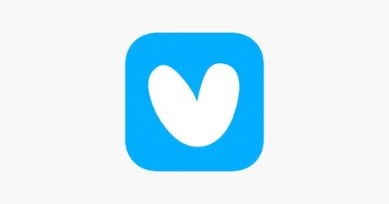

С этого понедельника я перешел из Яндекс Еды в Яндекс Лавку. Еда была моим домом без малого 5 лет. За это время она из около-стартапа превратилась в большой и зрелый бизнес. Когда я приходил, в Еде было всего около 100 инженеров. Сейчас - примерно в 5 раз больше. Это были очень крутые 5 лет, но пришла пора двигаться дальше. Для Фудтеха и Городских сервисов Яндекса я сейчас принесу больше пользы именно в Лавке.
Когда я переходил из Персональных сервисов Яндекса (тогда они были частью поискового портала) в Еду, меня очень драйвила оффлайновость бизнеса. Можно было делать не только пиксели на экране, но и что-то, что видно в окно, что можно пощупать, была связь с физическим миром. Это было очень интересно. Сейчас, с переходом в Лавку, offline intencifies - тут еще больше физики реального мира.
В Лавке я буду отвечать за разработку операционного продукта и b2b. Ничего не понятно, но очень интересно. Я пока сам не до конца разобрался, что мне предстоит делать, но специфика крайне занимательная. Управление складами и распределительными центрами. Заводы-пароходы и грузовая логистика. Закупки и отчетность. Промышленные устройства и физическое it-обеспечение объектов. Внешние партнеры и интеграции. Будем разбираться.
Вообще Лавка - очень душевный, теплый сервис. С классной командой и доброй миссией. Но чтобы эту миссию выполнить, нужна операционная эффективность и сильный бизнес. А для этого нужно много накодить. Кстати, мы нанимаем)
